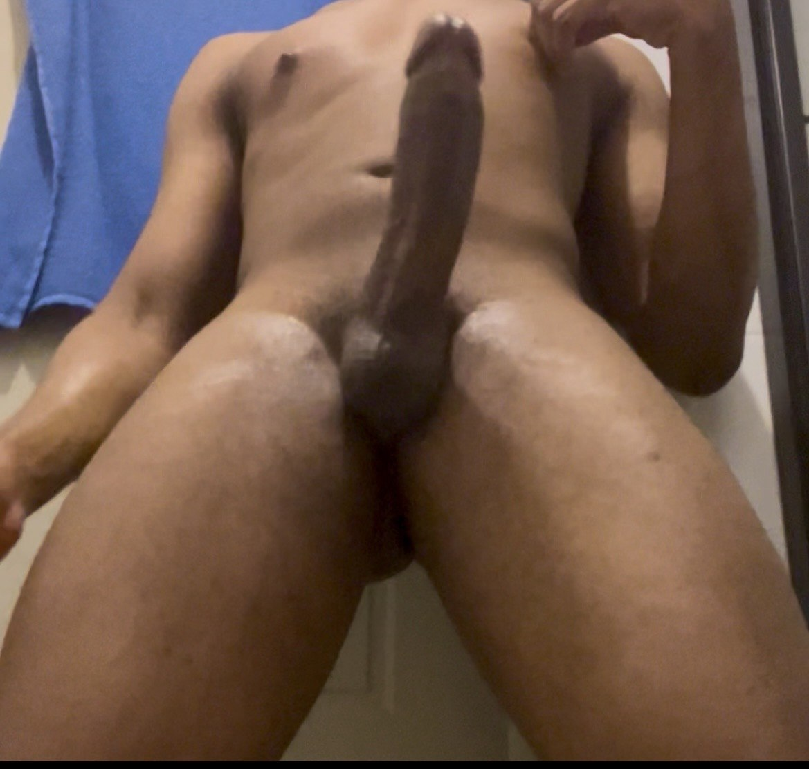

Smooth Caramel Physique

Private 1+0 Sanctuary Vault

Elite Workstation Dynamic

Welcome to a completely curated, trace-free sanctuary designed for elite international travelers, business expats, and airline pilots looking for a premier istanbul independent companion. If you are searching for high-end, reliable independent gay escorts istanbul, this private platform connects you directly to a dedicated, independent provider without agency filters or interference. When searching for reliable istanbul male escorts or an elite, independent istanbul gay hookup alternative, our platform ensures high-status visual value and total data security.
Many discerning corporate clients and mature visitors intentionally filter out overdeveloped bodybuilders when browsing regional directories. This platform is specifically tailored for those who look for a premium smooth natural male companion istanbul. Featuring a youthful, lean presentation with a flat stomach male companion istanbul profile and natural definition, this service delivers an elite, unhurried experience. Whether you identify with the young lean gay companion istanbul category or seek a top-tier twink escort istanbul look, our immaculate presentation guarantees absolute visual and physical alignment under relaxing desk lamps. For clients who refuse to settle for low-value local setups or unregulated istanbul gay prostitutes links, we stand firm on delivering pristine personal alignment.
Operating completely independently out of a highly quiet, private 1+0 studio workspace, our setup ensures 100% total discretion with zero reception counters, no security cameras, and absolute neighbor privacy. We provide seamless in-studio bookings and high-status outcalls across major transit hubs and elite corporate sectors:
Financial Corporate Hubs: Serving elite managers requiring a discrete levent gay escort, high-rise professionals searching for a maslak gay escort, or central clients looking for a premier şişli gay escort or mecidiyeköy gay escort line.
Luxury Waterfront & Historical Zones: Providing rapid, confidential door-to-door access for travelers seeking a beşiktaş gay escort, international tourists needing a verified taksim gay escort / beyoğlu gay escort, or upscale visitors requiring an elite nişantaşı gay escort or a discrete ortaköy gay escort block.
Expanded Istanbul Metropolis Districts: Catering to elite inquiries searching for a specialized arnavutköy gay escort, transit travelers tracking an active aksaray gay escort, residential professionals looking for a premium bakırköy gay escort, high-end private community residents requiring an elite alkent gay escort / acarkent gay escort, or coastal expansion zones looking for a discrete beylikdüzü gay escort.
For local professionals, discreet citizens, and resident business owners checking the chronological feeds via anonymous web viewers, our infrastructure is optimized for specific parameters. This listing functions directly as an elite istanbul gay escort option for those browsing central grids. If your search focuses on high-tier body relaxation or an unhurried istanbul gay masaj block with exceptional hands, our studio is fully equipped. We maintain clear boundaries across the local market, making this the top choice for users looking for a beyoğlu bağımsız gay presence or navigating search metrics like istanbul gay aktif pasif configurations.
Furthermore, our independent network footprint scales directly into major national economic sectors, luxury resort zones, and administrative quarters across Turkey for high-end outcall itineraries and executive travel:
Ankara Executive Coverage: Providing premium services for professionals requiring an elite ankara gay escort, corporate diplomats searching for a çankaya gay escort, or transit travelers seeking a discrete kızılay gay escort or tunalı gay escort block.
İzmir Coastal & Business Hubs: Serving upscale clients tracking an active izmir gay escort, central business visitors looking for a alsancak gay escort, luxury residential inquiries seeking a karşıyaka gay escort, or coastal travelers requiring a discrete çeşme gay escort session.
Antalya & Mediterranean Riviera Resorts: Tailored for luxury tourists and international travelers filtering for a premium antalya gay escort, luxury harbor visitors booking a alanya gay escort, or elite holiday makers requiring a lara gay escort or a discrete belek gay escort setup.
Muğla & Fethiye Elite Holiday Sectors: Perfectly indexed for high-net-worth voyagers looking for an independent muğla gay escort, premium yachting travelers requiring a fethiye gay escort, or luxury villa residents booking an elite bodrum gay escort or a discrete marmaris gay escort block.
Fixed Parameter: 1 Hour Incall = 3,500 TL (or cash equivalent in USD/EUR). No chat loops, no free photo trading, and absolute professional parameters.
Click to Message My Verified WhatsApp Directly ...i ✨ l